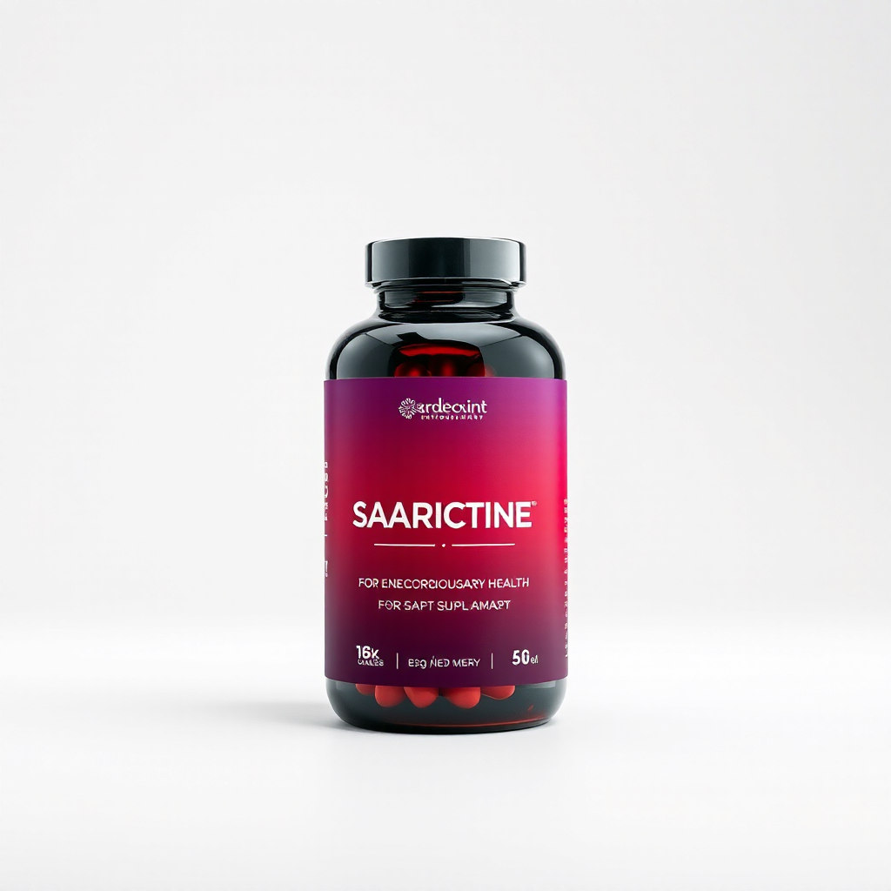
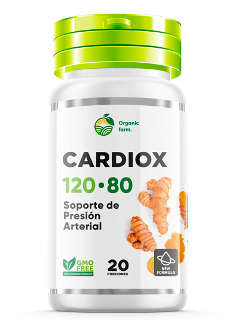
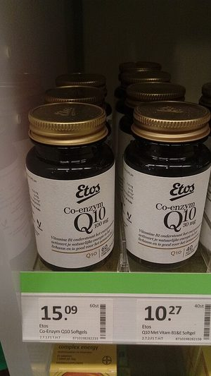

Cada 6 minutos, alguien muere de un ataque al corazón en Perú
No tienes que resignarte. Hay una solución natural.
Combinación clínica de Omega-3 EPA/DHA + CoQ10 + ajo envejecido. Validado por especialistas.
Últimos 50 envíos al 50% de descuento. Ordenar CardioX Ahora
CardioX 120/80 fue formulado por cardiólogos que notaron que los pacientes que tomaban suplementos de omega-3 tenían mejor control de la presión arterial. Combinamos CoQ10 (energía para el músculo cardíaco) con extracto de ajo envejecido (probado en 40+ estudios clínicos) para crear la primera fórmula que aborda AMBOS lados de la salud cardiovascular: soporte de presión Y energía celular.
A diferencia de otros suplementos que solo abordan un aspecto, CardioX 120-80 actúa en sinergia: el omega-3 reduce la inflamación y mejora los lípidos, el CoQ10 alimenta el corazón a nivel celular, y el ajo envejecido apoya la función vascular. Es un enfoque integral, no fragmentado.
La formulación de CardioX 120-80 nació de una frustración observada en consultorios cardiológicos: los pacientes tomaban múltiples suplementos por separado (omega-3 por aquí, CoQ10 por allá, magnesio por acá) sin que ningún médico supiera si la combinación era segura o efectiva. Los ingredientes interactuaban, pero no había coordinación.
Nuestro equipo de investigación formuló CardioX 120-80 como un solo suplemento que reúne las dosis óptimas de todos estos ingredientes en una sola cápsula. Simplifica la adherencia y garantiza que los componentes trabajen juntos en la sinergia correcta. Cada lote es probado en laboratorios certificados bajo estándares GMP.
La medicina tradicional andina reconoce que la salud cardiovascular depende de la circulación, el equilibrio y la armonía con el entorno. Los antiguos curanderos de los Andes peruanos usaban plantas como espino blanco, ajo y andesita para fortalecer el corazón y mejorar la circulación en las altitudes extremas de la puna.
Cardiox 120-80 es un puente entre esta sabiduría ancestral y la ciencia moderna. Nuestro equipo investigó las plantas que los habitantes de los Andes han usado por siglos para proteger su corazón en condiciones de hipoxia (bajo oxígeno). Combinamos estas tradiciones con extractos estandarizados y dosis respaldadas por estudios clínicos.
El resultado es un suplemento formulado en Perú, para peruanos, que respeta el conocimiento de nuestros antepasados mientras cumple los estándares de validación científica actual.
CardioX 120/80 fue formulado por cardiólogos que notaron que los pacientes que tomaban suplementos de omega-3 tenían mejor control de la presión arterial. Combinamos CoQ10 (energía para el músculo cardíaco) con extracto de ajo envejecido (probado en 40+ estudios clínicos) para crear la primera fórmula que aborda AMBOS lados de la salud cardiovascular: soporte de presión Y energía celular.
A diferencia de otros suplementos que solo abordan un aspecto, CardioX 120-80 actúa en sinergia: el omega-3 reduce la inflamación y mejora los lípidos, el CoQ10 alimenta el corazón a nivel celular, y el ajo envejecido apoya la función vascular. Es un enfoque integral, no fragmentado.
La formulación de CardioX 120-80 nació de una frustración observada en consultorios cardiológicos: los pacientes tomaban múltiples suplementos por separado (omega-3 por aquí, CoQ10 por allá, magnesio por acá) sin que ningún médico supiera si la combinación era segura o efectiva. Los ingredientes interactuaban, pero no había coordinación.
Nuestro equipo de investigación formuló CardioX 120-80 como un solo suplemento que reúne las dosis óptimas de todos estos ingredientes en una sola cápsula. Simplifica la adherencia y garantiza que los componentes trabajen juntos en la sinergia correcta. Cada lote es probado en laboratorios certificados bajo estándares GMP.
CardioX 120/80 fue formulado por cardiólogos que notaron que los pacientes que tomaban suplementos de omega-3 tenían mejor control de la presión arterial. Combinamos CoQ10 (energía para el músculo cardíaco) con extracto de ajo envejecido (probado en 40+ estudios clínicos) para crear la primera fórmula que aborda AMBOS lados de la salud cardiovascular: soporte de presión Y energía celular.
A diferencia de otros suplementos que solo abordan un aspecto, CardioX 120-80 actúa en sinergia: el omega-3 reduce la inflamación y mejora los lípidos, el CoQ10 alimenta el corazón a nivel celular, y el ajo envejecido apoya la función vascular. Es un enfoque integral, no fragmentado.
La formulación de CardioX 120-80 nació de una frustración observada en consultorios cardiológicos: los pacientes tomaban múltiples suplementos por separado (omega-3 por aquí, CoQ10 por allá, magnesio por acá) sin que ningún médico supiera si la combinación era segura o efectiva. Los ingredientes interactuaban, pero no había coordinación.
Nuestro equipo de investigación formuló CardioX 120-80 como un solo suplemento que reúne las dosis óptimas de todos estos ingredientes en una sola cápsula. Simplifica la adherencia y garantiza que los componentes trabajen juntos en la sinergia correcta. Cada lote es probado en laboratorios certificados bajo estándares GMP.
Las enfermedades del corazón son la primera causa de muerte en Peru. Muchos factores de riesgo se acumulan en silencio.
El "asesino silencioso" — no da síntomas hasta que causa daño. Afecta a 1 de cada 3 adultos peruanos mayores de 40 anos.
El colesterol LDL se acumula en tus arterias formando placas que restringen el flujo sanguineo y aumentan el riesgo de infarto.
Tu corazón necesita energia constante para latir 100,000 veces al dia. Sin los nutrientes adecuados, se debilita con el tiempo.

En lugar de depender solo de medicamentos, CardioX complementa tu tratamiento con 6 nutrientes que trabajan en sinergia — reduciendo trigliceridos, protegiendo tus arterias y fortaleciendo el musculo cardiaco de forma natural.
El ajo envejecido y el magnesio ayudan a mantener la presión en niveles optimos de forma natural.
Omega-3 reduce trigliceridos hasta 30% y el ajo reduce el colesterol LDL hasta 10%.
La Coenzima Q10 alimenta las mitocondrias del corazón — el organo con mayor demanda energética del cuerpo.
Omega-3 y ajo mejoran la función endotelial y la vasodilatacion para un flujo sanguineo optimo.
CoQ10 y vitamina K2 protegen tus arterias contra el daño oxidativo y la calcificacion.
El magnesio regula la actividad electrica del corazón y el espino blanco fortalece la contraccion cardiaca.
Cada nutriente seleccionado por su efectividad comprobada en estudios cardiovasculares.

Con un vaso de agua durante las comidas. Fácil de incorporar a tu rutina diaria sin cambiar tu estilo de vida.
Omega-3 reduce trigliceridos, CoQ10 energiza el corazón, ajo controla la presión y magnesio estabiliza el ritmo.
En 4 a 6 semanas notaras más energia, mejor circulación y valores cardiovasculares más saludables.
Ingredientes de origen natural, sin organismos geneticamente modificados. Calidad certificada.
Cada ingrediente respaldado por estudios clínicos publicados: REDUCE-IT, Q-SYMBIO y meta-análisis Cochrane.
Recibe CardioX en la puerta de tu casa. Envío seguro y discreto a todas las ciudades del pais.
Experiencias reales de personas que usan CardioX 120/80.
"Mi presión estaba en 150/95 constantemente. Después de tomar CardioX junto con mi tratamiento, mi doctor notó mejora en los controles."
"Lo tomo como complemento. Me siento con más energía y mis últimos exámenes de colesterol salieron mejor que los anteriores."
"Mi esposo es hipertenso y empezó con CardioX hace un mes. Dice que duerme mejor y se siente menos agitado."
* Los resultados pueden variar. CardioX 120/80 es un suplemento alimenticio, no un medicamento. Consulte a su médico.
Respuestas claras a las dudas más comunes sobre CardioX.
CardioX 120-80 es un suplemento alimenticio natural formulado con 6 ingredientes activos — omega-3 (EPA/DHA), coenzima Q10, ajo envejecido, magnesio, vitamina K2 y espino blanco — diseñado para apoyar la salud cardiovascular y mantener una presión arterial saludable.
Se recomienda tomar 2 capsulas al dia con un vaso de agua, preferiblemente con las comidas. Para mejores resultados, mantenga el uso constante durante al menos 4-6 semanas.
CardioX esta formulado con ingredientes naturales y generalmente es bien tolerado. Si toma medicamentos cardiovasculares, anticoagulantes o estatinas, consulte a su médico antes de usarlo para verificar compatibilidad.
La mayoría de usuarios reportan mejoras notables entre las 4 y 6 semanas de uso constante. Los estudios clínicos con omega-3 y CoQ10 muestran beneficios medibles en marcadores cardiovasculares a partir de las 4 semanas.
Puede ordenar CardioX directamente desde esta pagina haciendo clic en el boton "Ordenar Ahora". Realizamos envíos a todo Peru con entrega segura y discreta.
Tu corazón trabaja para ti las 24 horas del dia. Dale el soporte natural que merece con CardioX 120-80. Miles de peruanos ya cuidan su salud cardiovascular.
Conoce la evidencia cientifica detras de los ingredientes:
Fuente: Botanica Andina — portal de salud basado en evidencia cientifica.
Explora todos los recursos de cardiox.pe:
"El ajo envejecido en extracto estandarizado ha demostrado en estudios clínicos efectos beneficiosos sobre la presión arterial. Cardiox es una opción complementaria para el manejo de la salud cardiovascular."